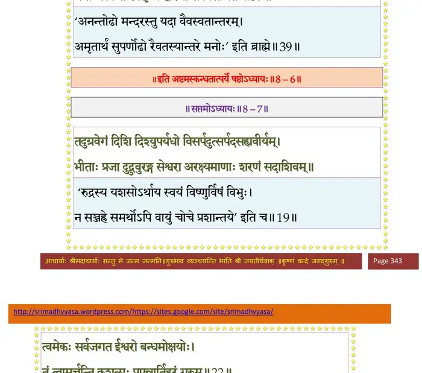

स्कन्ध 8 · अध्याय 6
श्लोक १
श्रीशुक उवाच–
एवं स्तुतः सुरगणैर्भगवान् हरिरीश्वरः ।
तेषामाविरभूद् राजन् सहस्रार्कोदयद्युतिः।। १ ।।
एवं स्तुतः सुरगणैर्भगवान् हरिरीश्वरः ।
तेषामाविरभूद् राजन् सहस्रार्कोदयद्युतिः।। १ ।।
श्लोक २
तेनैव महसा सर्वे देवाः प्रतिहतेक्षणाः ।
नापश्यन् खं दिशः क्षोणीमात्मानं चाग्रतो विभुम्।। २ ।।
नापश्यन् खं दिशः क्षोणीमात्मानं चाग्रतो विभुम्।। २ ।।
श्लोक ३
विरिञ्चो भगवान् दृष्ट्वा सह शर्वेण भारत ।
स्वच्छं मरकतश्यामं कञ्जगर्भारुणेक्षणम् ।। ३ ।।
स्वच्छं मरकतश्यामं कञ्जगर्भारुणेक्षणम् ।। ३ ।।
श्लोक ४
तप्तहेमावदातेन लसत्कौशेयवाससा ।
प्रसन्नचारुसर्वाङ्गं सुमुखं सुन्दरभ्रुवम् ।। ४ ।।
प्रसन्नचारुसर्वाङ्गं सुमुखं सुन्दरभ्रुवम् ।। ४ ।।
श्लोक ५
महामणिकिरीटेन केयूराभ्यां च भूषितम् ।
कर्णाभरणनिर्भातकपोलश्रीमुखाम्बुजम्।। ५ ।।
कर्णाभरणनिर्भातकपोलश्रीमुखाम्बुजम्।। ५ ।।
श्लोक ६
काञ्चीकलापवलयहारनूपुरशोभितम् ।
कौस्तुभाभरणं लक्ष्म बिभ्रतं वनमालिनम्।। ६ ।।
कौस्तुभाभरणं लक्ष्म बिभ्रतं वनमालिनम्।। ६ ।।
श्लोक ७
सुदर्शनादिभिः स्वास्त्रैर्मूर्तिमद्भिरुपासितम् ।
तुष्टाव देवप्रवरः सर्वेशं पुरुषं परम् ।
सर्वामरगणैः सार्धं सर्वाङ्गैरवनिं गतैः।। ७ ।।
तुष्टाव देवप्रवरः सर्वेशं पुरुषं परम् ।
सर्वामरगणैः सार्धं सर्वाङ्गैरवनिं गतैः।। ७ ।।
श्लोक ८
ब्रह्मोवाच–
अजाय जन्मस्थितिसंयमाय गुणाय निर्वाणसुखार्णवाय ।
अणोरणिम्नेऽपरिगण्यधाम्ने महानुभावाय नमो नमस्ते।। ८ ।।
अजाय जन्मस्थितिसंयमाय गुणाय निर्वाणसुखार्णवाय ।
अणोरणिम्नेऽपरिगण्यधाम्ने महानुभावाय नमो नमस्ते।। ८ ।।
श्लोक ९
रूपं तवैतत् पुरुषर्षभेड््यं श्रेयोर्थिभिर्वैदिकतान्त्रिकैश्च ।
योगेन धातः सह नस्त्रिलोकान् पश्याम्यमुष्मिन् भुवि विश्वमूर्ते ।।९।।
योगेन धातः सह नस्त्रिलोकान् पश्याम्यमुष्मिन् भुवि विश्वमूर्ते ।।९।।
श्लोक १०
त्वय्यग्र आसीदिदमात्मतन्त्रे त्वमादिरन्तो जगतोऽस्य मध्यम् ।
घटस्य मृत्स्नेव परः परस्मात् त्वमेव चाशेषविशेषनामा।। १० ।।
घटस्य मृत्स्नेव परः परस्मात् त्वमेव चाशेषविशेषनामा।। १० ।।
श्लोक ११
त्वं माययाऽऽत्माश्रयया स्वयेदं निर्माय विश्वं तदनुप्रविष्टः ।
पश्यन्ति युक्ता मनसा मनीषिणो गुणव्यवायेऽप्यगुणं विपश्चितः।। ११ ।।
पश्यन्ति युक्ता मनसा मनीषिणो गुणव्यवायेऽप्यगुणं विपश्चितः।। ११ ।।
श्लोक १२
यथाऽग्निमेधस्यमृतं च गोषु भुव्यन्नम्बूत्खनने तथोर्व्याः ।
योगैर्मनुष्या अधियन्ति हित्वा गुणेषु बुध्द्या कवयो वयन्ति।।१२।।
योगैर्मनुष्या अधियन्ति हित्वा गुणेषु बुध्द्या कवयो वयन्ति।।१२।।
श्लोक १३
तं त्वा वयं नाथ समुज्जिहानं सरोजनाभातिचिरेप्सितार्थम् ।
दृष्ट्वा गता निर्वृतिमद्य सर्वे गजा दवार्ता इव गाङ्गमम्भः।। १३ ।।
दृष्ट्वा गता निर्वृतिमद्य सर्वे गजा दवार्ता इव गाङ्गमम्भः।। १३ ।।
श्लोक १४
स त्वं विधत्स्वाऽखिललोकपाला वयं यदर्थास्तव पादमूलम् ।
समागतास्ते बहिरन्तरात्मन् किं वाद्य विज्ञाप्यमशेषसाक्षिणः।।१४।।
समागतास्ते बहिरन्तरात्मन् किं वाद्य विज्ञाप्यमशेषसाक्षिणः।।१४।।
श्लोक १५
अहं गिरित्रश्च सुरादयो ये दक्षादयोऽग्नेरिव केतवस्ते ।
किं वा विधेमेश पृथग्विभाविता विधत्स्व शं नो द्विजदेवमित्र ।। १५ ।।
किं वा विधेमेश पृथग्विभाविता विधत्स्व शं नो द्विजदेवमित्र ।। १५ ।।
श्लोक १६
श्रीशुक उवाच–
एवं विरिञ्च््यादिभिरीडितस्तद् विज्ञाय तेषां हृदयं यथैव ।
जगाद जीमूतगभीरया गिरा बद्धाञ्जलीन् संवृतसर्वकामान्।। १६ ।।
एवं विरिञ्च््यादिभिरीडितस्तद् विज्ञाय तेषां हृदयं यथैव ।
जगाद जीमूतगभीरया गिरा बद्धाञ्जलीन् संवृतसर्वकामान्।। १६ ।।
श्लोक १७
एक एवेश्वरस्तस्मिन् सुरकार्ये सुरश्वेरः ।
विहर्तुकामस्तानाह समुद्रोन्मथनादिभिः।। १७ ।।
विहर्तुकामस्तानाह समुद्रोन्मथनादिभिः।। १७ ।।
श्लोक १८
श्रीभगवानुवाच–
हन्त ब्रह्मन्नहो शम्भो हे देवा मम भाषितम् ।
श्रुणुतावहिताः सर्वे श्रेयो वः स्याद् यथा पुरा।। १८ ।।
हन्त ब्रह्मन्नहो शम्भो हे देवा मम भाषितम् ।
श्रुणुतावहिताः सर्वे श्रेयो वः स्याद् यथा पुरा।। १८ ।।
श्लोक १९
यातुधानैश्च दैतेयैस्तावत् सन्धिर्विधीयताम् ।
कालेनानुगृहीतैस्तैर्यावद् वो भव आत्मनः।। १९ ।।
कालेनानुगृहीतैस्तैर्यावद् वो भव आत्मनः।। १९ ।।
श्लोक २०
अरयोऽपि हि सन्धेयाः सति कार्यार्थगौरवे ।
अहिमूषकवद् देवा ह्यर्थस्य पदवीं गतैः।। २० ।।
अहिमूषकवद् देवा ह्यर्थस्य पदवीं गतैः।। २० ।।
श्लोक २१
अमृतोत्पादने यत्नः क्रियतामविलम्बितम् ।
यस्य पीतस्य वै जन्तुर्मृत्युग्रस्तोऽमरो भवेत्।। २१ ।।
यस्य पीतस्य वै जन्तुर्मृत्युग्रस्तोऽमरो भवेत्।। २१ ।।
श्लोक २२
क्षिप्त्वा क्षीरोदधौ सर्वा वीरुत्तृणलतौषधीः ।
मन्थानं मन्दरं कृत्वा नेत्रं कृत्वा तु वासुकिम्।। २२ ।।
मन्थानं मन्दरं कृत्वा नेत्रं कृत्वा तु वासुकिम्।। २२ ।।
श्लोक २३
सहायेन मया देवा निर्मथध्वमतन्द्रिताः ।
क्लेशभाजो भविष्यन्ति दैत्या यूयं फलग्रहाः।। २३ ।।
क्लेशभाजो भविष्यन्ति दैत्या यूयं फलग्रहाः।। २३ ।।
श्लोक २४
यूयं तदनुमोदध्वं यदिच्छन्त्यसुराः सुराः ।
न संरम्भेण सिद्ध्यन्ति सर्वेऽर्थाः सान्त्वया यथा।। २४ ।।
न संरम्भेण सिद्ध्यन्ति सर्वेऽर्थाः सान्त्वया यथा।। २४ ।।
श्लोक २५
न भेतव्यं कालकूटाद् विषाज्जलधिसम्भवात् ।
लोभः कार्यो न वो जातु रोषः कामस्तु वस्तुषु।। २५ ।।
लोभः कार्यो न वो जातु रोषः कामस्तु वस्तुषु।। २५ ।।
श्लोक २६
श्रीशुक उवाच–
इति देवान् समादिश्य भगवान् पुरुषोत्तमः ।
तेषामन्तर्दधे राजन् स्वच्छन्दगतिरीश्वरः।। २६ ।।
इति देवान् समादिश्य भगवान् पुरुषोत्तमः ।
तेषामन्तर्दधे राजन् स्वच्छन्दगतिरीश्वरः।। २६ ।।
श्लोक २७
अथ तस्मै भगवते नमस्कृत्य पितामहः ।
भवश्च जग्मतुः स्वं स्वं धाम चेयुर्बलिं सुराः।। २७ ।।
भवश्च जग्मतुः स्वं स्वं धाम चेयुर्बलिं सुराः।। २७ ।।
श्लोक २८
दृष्ट्वाऽरीनप्यसम्पन्नान् जातक्ष्वेलान् स्वनायकान् ।
न्यषेधद् दैत्यराडुच्चैः सन्धिविग्रहकालवित्।। २८ ।।
न्यषेधद् दैत्यराडुच्चैः सन्धिविग्रहकालवित्।। २८ ।।
श्लोक २९
ते वैरोचनिमासीनं गुप्तं चासुरयूथपैः ।
श्रिया परमया जुष्टं जिताशेषमुपागमन्।। २९ ।।
श्रिया परमया जुष्टं जिताशेषमुपागमन्।। २९ ।।
श्लोक ३०
महेन्द्रः श्लक्ष्णया वाचा सान्त्वयित्वा महामतिः ।
अभ्यभाषत तत्सर्वं शिक्षितं पुरुषोत्तमात्।। ३० ।।
अभ्यभाषत तत्सर्वं शिक्षितं पुरुषोत्तमात्।। ३० ।।
श्लोक ३१
तदरोचत दैत्यस्य तत्रान्ये येऽसुराधिपाः ।
शम्बरोऽरिष्टनेमिश्च ये च त्रिपुरवासिनः।। ३१ ।।
शम्बरोऽरिष्टनेमिश्च ये च त्रिपुरवासिनः।। ३१ ।।
श्लोक ३२
ततो देवासुराः कृत्वा संविदं कृतसौहृदाः ।
उद्यमं परमं चक्रुरमृतार्थे परन्तप।। ३२ ।।
उद्यमं परमं चक्रुरमृतार्थे परन्तप।। ३२ ।।
श्लोक ३३
ततस्ते मन्दरगिरिमञ्जसोत्पाट्य दुर्मदाः ।
नदन्त उदधिं निन्युः शक्ताः परिघबाहवः।। ३३ ।।
नदन्त उदधिं निन्युः शक्ताः परिघबाहवः।। ३३ ।।
श्लोक ३४
दूरभारोद्वहश्रान्ताः शक्रवैरोचनादयः ।
अपारयन्तस्तं वोढुं विवशा विजहुः पथि।। ३४ ।।
अपारयन्तस्तं वोढुं विवशा विजहुः पथि।। ३४ ।।
श्लोक ३५
निपतन् सगिरिस्तावद् बहूनमरदानवान् ।
चूर्णयामास महता भारेण कनकाचलः।। ३५ ।।
चूर्णयामास महता भारेण कनकाचलः।। ३५ ।।
श्लोक ३६
तांस्तथा भग्नमनसो भग्नबाहूरुकन्धरान् ।
विज्ञाय भगवांस्तत्र बभूव गरुडध्वजः।। ३६ ।।
विज्ञाय भगवांस्तत्र बभूव गरुडध्वजः।। ३६ ।।
श्लोक ३७
गिरिपातविनिष्पिष्टान् विलोक्यामरदानवान् ।
ईक्षया जीवयामास निर्जरान् निर्व्रणान् यथा।। ३७ ।।
ईक्षया जीवयामास निर्जरान् निर्व्रणान् यथा।। ३७ ।।
श्लोक ३८
गिरिं चारोप्य गरुडे हस्तेनैकेन लीलया ।
आरुह्य प्रययावब्धिं सुरासुरगणैर्वृतः।। ३८ ।।
आरुह्य प्रययावब्धिं सुरासुरगणैर्वृतः।। ३८ ।।
श्लोक ३९
अवरोप्य गिरिं स्कन्धात् सुपर्णः पततां वरः ।
ययौ जलान्त उत्सृज्य हरिणा स विवर्जितः।। ३९ ।।
ययौ जलान्त उत्सृज्य हरिणा स विवर्जितः।। ३९ ।।
भागवततात्पर्यनिर्णय

।। इति श्रीमद्भागवते अष्टमस्कन्धे षष्ठोऽध्यायः ।।